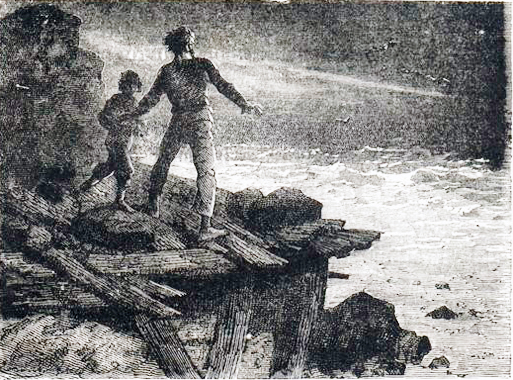
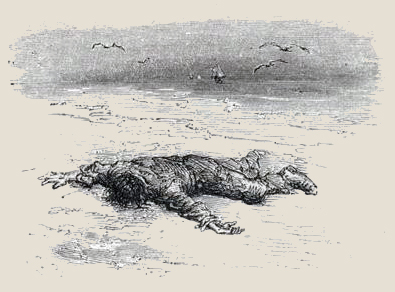

CHA tôi về tháng tám. Đến tháng chín trời đã bắt đầu xấu vì thời tiết đã êm đẹp được ba tháng rồi. Mùa êm lặng đã hết, mùa gió bão bắt đầu. Người ta chỉ nói đến chuyện đắm ở ngoài khơi.
Mọi người đều lo-sợ vì là độ các người đánh cá ở Tân- Địa trở về.
Giông-tố lai-rai suốt ba tuần-lễ. Một buổi chiều kia, bỗng nhiên gió im bặt ở ngoài biển cũng như trên đất liền, tôi đã mừng rằng trời tạnh, nhưng đến bữa cơm tối, tôi nhắc cha tôi đến mai đi cất những lưới đã thả từ hôm bắt đầu mưa gió. Cha tôi cười và bảo:
– Ngày mai, bão sẽ dữ-dội hơn và bắt đầu từ phía tây đến. Ta xem mặt trời lặn trong đám sương mù đỏ, trời lắm sao, đất nóng, biển sôi. Tất có một trận bão kinh-khủng nhất mà con chưa hề trông thấy bao giờ.

.Vì thế, hôm sau, đáng lẽ ra biển cất lưới, chúng tôi ở nhà nhặt đá xếp lên mui tàu (tàu đắm đã lâu ở cạnh nhà) gió tây bắt đầu thổi từ sáng sớm. Không có mặt trời. Trên nền trời nhơm-nhếch, chỗ chỗ có một vệt xanh dài. Nước triều xuống nhưng nghe xa có tiếng ù-ù.
Cha tôi đang làm việc trên mui tàu, bỗng ngừng lại. Tôi bèn leo lên cạnh cha tôi. Ngoài khơi, chỗ chân trời có một điểm trắng nổi lên trên nền trời đen: Một chiếc tàu.
Cha tôi nói:
– Chiếc tàu kia muốn đắm.
Thực vậy, có gió tây thì bến Thiên-Cảng, không sao vào được.
Nhờ một lúc quang mây nên chúng tôi mới nhìn thấy chiếc tàu đó. Song con tàu lại biến mất trước mắt chúng tôi. Mây đen kéo dầy-đặc và đùn lên rất nhanh tựa hồ như những cuộn khói từ một đám cháy lớn ở chân trời bốc lên.
Chúng tôi vào làng. Người ta chạy ra «đập» rất đông, vì ai cũng nhìn thấy một con tàu đang bị nguy.
Ở đằng xa cũng như ở chân chúng tôi, ở bên phải, bên trái và chung quanh chúng tôi, mặt biển chỉ là một làn bọt trắng, một áng tuyết rung-rinh. Biển lên nhanh hơn ngày thường với những tiếng đùng-đùng đinh tai nhức óc. Những đám mây tuy có gió thổi nhưng vẫn nặng-nề và bay là-là mặt biển, như muốn đem hết trọng-lượng đè ép đám bọt trắng kia. Con tàu hiện ra to dần: đó là chiếc tàu nhỏ hai cột buồm nhưng lúc đó buồm cuốn lại hết.
Đại-úy Huyên nhìn ống kính xong nói:
– Đó là tàu của anh em Lê-Hưng.
Anh em Lê-Hưng là hãng tàu giàu nhất trong miền.
Đại-úy nói tiếp:
– Kia họ kéo cờ hiệu. Họ đòi hoa-tiêu.
– Phải rồi! Họ cần hoa-tiêu. Nhưng ra làm sao được?
Người trả lời câu đó. Chính là Hoa-tiêu Huy-Sa. chung quanh là những người trong nghề cả, không ai cãi lại vì Huy-Sa nói rất phải, sóng gió thế này không sao ra được.
Ngay lúc đó, người ta thấy người anh cả chủ hãng Lê-Hưng ở trong làng đang hớt-hải chạy ra. Ông ta không biết sức gió thế nào nên vừa ra khỏi cổng làng thì bị bay lộn mấy vòng và ngã dí xuống đường như một gói quần-áo. Cố lóp-ngóp dậy, ông bước thất-thểu, đâm đầu đi lảo-đảo như người bơi trong sóng, sau cùng đến được pháo-đài, chỗ chúng tôi đang trú ẩn.
Một phút sau, người ta biết chiếc tàu kia là của ông, mới đi biển lần thứ nhất.
Ông Lê-Hưng liền kéo mũ trùm đầu của Huy-Sa và bảo:
– Hai mươi xu một thùng rượu, nếu ông đưa vào được.
– Muốn đưa vào, trước hết phải có thể ra mới được
Lúc đó, sóng tràn qua đập, gió cuốn cả rong, cả cát, cả mái đồn cùng với bọt sóng quăng đi, những mảnh mây bị cắt đứt và đưa ra khơi đã đen lại đen thêm trên mặt biển trắng xóa. Con tàu không thấy hoa-tiêu ra, liền lảng ra, chạy vát để đợi.
Đợi cũng đắm, mà vào không có hoa-tiêu lại càng dễ đắm.
Người làng chạy ra càng đông.
Ông Lê-Hưng cứ gào:
– Hai mươi xu một thùng! Bốn mươi xu! Các anh đều thế cả. Khi người ta không cần thì túa ra biển. Khi nguy-hiểm thì các anh đều núp ở nhà.
Không ai trả lời; ông ta càng tức:
– Các anh là đồ vô dụng. Ba trăm ngàn phật-lăng vứt xuống biển. Các anh hèn lắm.
Cha tôi chạy ra:
– Cho tôi chiếc thuyền, tôi ra.
– Anh, anh Can-Bích, anh là người hào-hiệp.
Hoa-tiêu Huy-Sa nói:
– Nếu anh Can-Bích ra, tôi cũng ra.
Ông Lê-Hưng lại rao:
– Hai mươi xu một thùng, tôi không nói sai.
Ông già Huy-Sa nói:
– Không cần, cái đó tôi ra không phải vì ông. Nhưng nếu tôi không trở về mà vợ tôi ngày chủ-nhật có đến xin ông hai xu thì ông đừng từ chối nhá.
Ông Lê-Hưng nói:
– Anh Can-Bích! Tôi sẽ nuôi con anh.
– Chưa đủ. Ông phải mượn Hai Sôm cho tôi chiếc thuyền.
Chiếc thuyền đó tên gọi Thánh Giăng chạy buồm ở bờ biển rất giỏi bất cứ thời-tiết nào.
Hai Sôm nói:
– Tôi bằng lòng. Nhưng tôi chỉ biết cho anh Can-Bích mượn thôi và phải đem về trả tôi.
Hai người ra không đủ, cần người thứ ba nữa: một người anh họ tôi chạy ra.
Cha tôi ôm tôi vừa hôn vừa nói, mà bây giờ tôi vẫn còn nhớ giọng cha tôi:
– Không biết thế nào! Con bảo mẹ con rằng cha hôn mẹ con.
Thuyền Thánh Giăng đi vòng bờ đập.
Khi tàu Lê-Hưng trông thấy, đổi đường và tiến thẳng về phía hải-đăng. Mười phút sau hai cái gặp nhau: chiếc thuyền đi sát vào mạn tàu và ngay lúc đó thuyền quay như chong chóng, hai chiếc đã buộc vào nhau.
Một tiếng kêu lên:
– Dây kéo không chắc đâu.
Người khác nói:
– Nếu dây không đứt thì hai cái vẫn không áp được vào nhau.
Thực vậy, người ta xem ra thuyền Thánh Giăng không sao vào gần được để cho Huy-Sa lên trên tàu. Thuyền không tan-tành, thì Huy-Sa cũng bị rơi xuống biển mất.
Cái nọ kéo cái kia, hai cái đều bị một luồng gió đẩy, một con sóng dồn, con tàu và chiếc thuyền tiến vào gần. Khi con tàu chúi mũi xuống, sàn tàu dựng ngược lên, người ta thấy các thủy-thủ đứng không vững phải gặp cái gì bám vào cái ấy.
Ông Lê-Hưng kêu:
– Leo lên đi! Lên đi!
Đã ba bốn lần, Huy-Sa cố leo lên. Nhưng không được. Sau cùng con tàu nghiêng vào phía thuyền Thánh Giăng, nhờ đợt sóng đưa tàu lên và hạ tàu xuống, Huy-Sa liền bám vào mạn tàu, chỗ buộc dây buồm leo lên.
Lập tức, tàu vun-vút chạy vào nhanh như bão, chỉ kéo đủ buồm để lái. Nó chúi mũi, chúi lái, nó tròng-trành, rồi rạp hẳn sang bên này, sang bên kia như muốn trở buồm. Một cơn gió giật cuốn phăng chiếc buồm vuông và xé tan các buồm khác. Con tàu hết chỗ tựa để lái, chạy xiên-xẹo và cách cửa bến chừng hai, ba trăm mét. Mợi người đều thất vọng và kêu lên.
Thuyền Thánh Giăng còn lại cha tôi và anh họ tôi chạy theo tàu và cách nhau mộl quãng ngắn. Mắt tôi lúc đó để vào thuyền cha tôi. Khi tàu vào cửa lạch, tôi không thấy thuyền cha tôi đâu. Tôi nhìn ra thì hãy còn ở ngoài đập. Con tầu vận chuyển lúng túng làm vướng lối vào đã hẹp nên chiếc thuyền bị lỡ, phải chạy thẳng sang vũng bên tay phải là nơi biển thường bớt sóng trong những trận bão nhỏ.
Nhưng ngày hôm ấy, vũng đó cũng như khắp mặt biển, chỗ nào cũng nổi sóng dữ-dội, và lại ngược gió nên con thuyền không sao tiến vào được. Buồm phải kéo xuống ; neo phải bỏ ngay. Sóng từ ngoài khơi cứ kế tiếp chồm vào bãi. Con thuyền chìa mũi ra đỡ. Từ chỗ thuyền neo đến bãi có một lớp đá ngầm trước đó nửa giờ còn lô-nhô trên mặt nước.
Chiếc neo kia có vững chăng?
Tôi còn nhỏ dại, nhưng tôi cũng thấy cái thời-gian chờ đợi đó dài quá và ghê sợ quá.
Chung quanh tôi, người ta bàn-tán:
– Cứ đứng đấy thì cũng chìm, mà vào bãi thì tan từng mảnh.
– Can-Bích bơi giỏi lắm.
– Bơi à? Có mà chết!
Thực vậy, lúc đó một tấm ván mỏng có thể dìm sâu trong xoáy nước, xáo trộn nào cỏ nào sỏi với bọt trắng tinh.
Trong khi tôi đang thở hì-hạch, tôi thấy ở đằng sau có người nắm lấy hai cánh tay tôi. Mẹ tôi đã chạy đến, mặt xám ngắt.
Người ta vây lấy chúng tôi, Đại-úy Huyên và mấy người nữa. Người ta nói, người ta giải thích cho chúng tôi yên lòng. Nhưng mẹ tôi cứ đứng im và nhìn ra ngoài biển.
Thình-lình, một tiếng kêu át cả tiếng bão:
– Neo tuột rồi!
Mẹ tôi ngã gục và lôi cả tôi xuống.
Khi tôi ngửng đầu lên, tôi trông thấy thuyền Thánh Giăng bị một ngọn sóng lớn trùm lên và đưa vào đám đá ngầm. Khi ngọn sóng lũng xuống thì chiếc thuyền tự-nhiên dựng ngược lên và quay mấy vòng rồi tôi chỉ còn trông thấy một lớp bọt trắng.
Mãi hôm sau, người ta mới tìm thấy tử-thi cha tôi cụt cả tay. Còn xác anh tôi thì không tìm thấy.

.